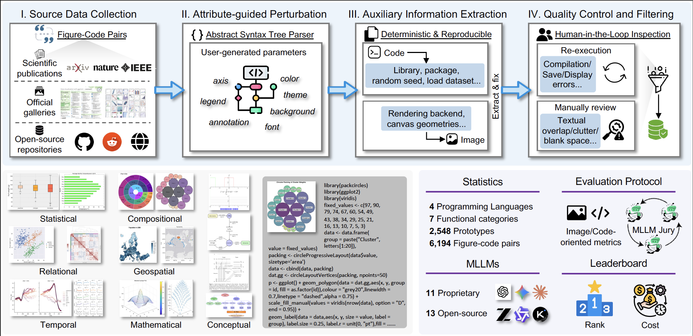
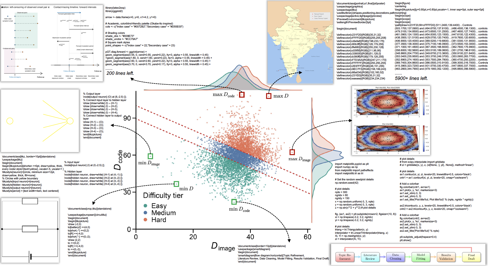
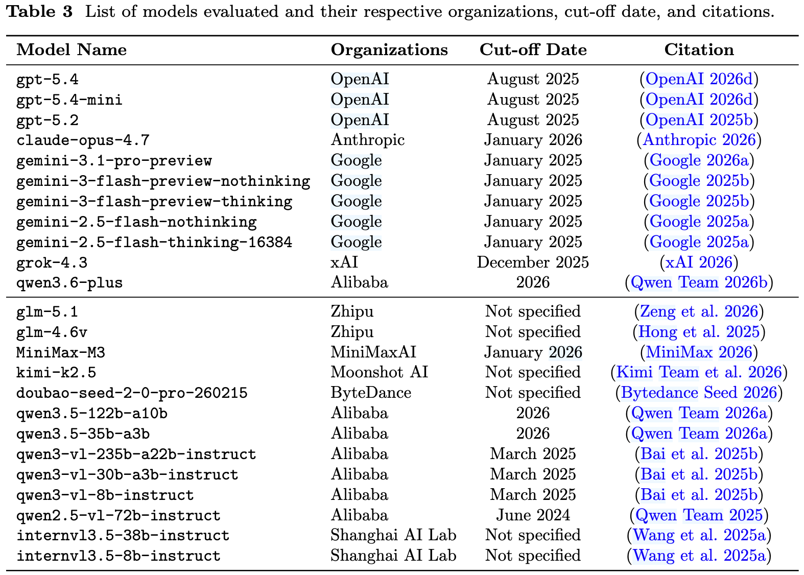
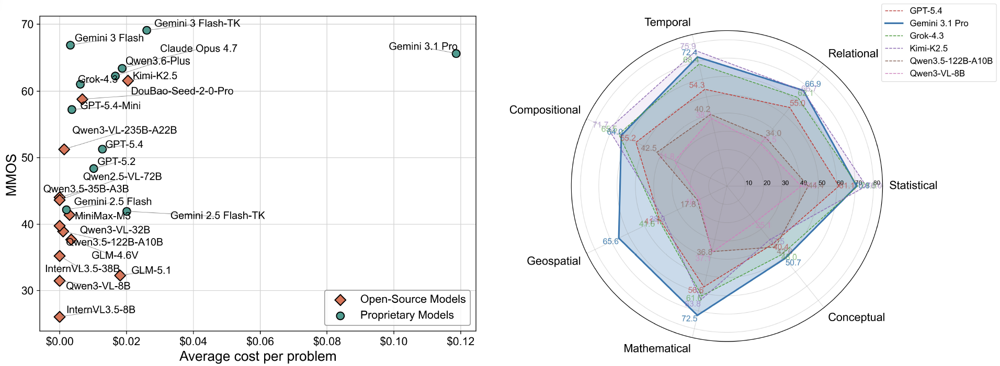
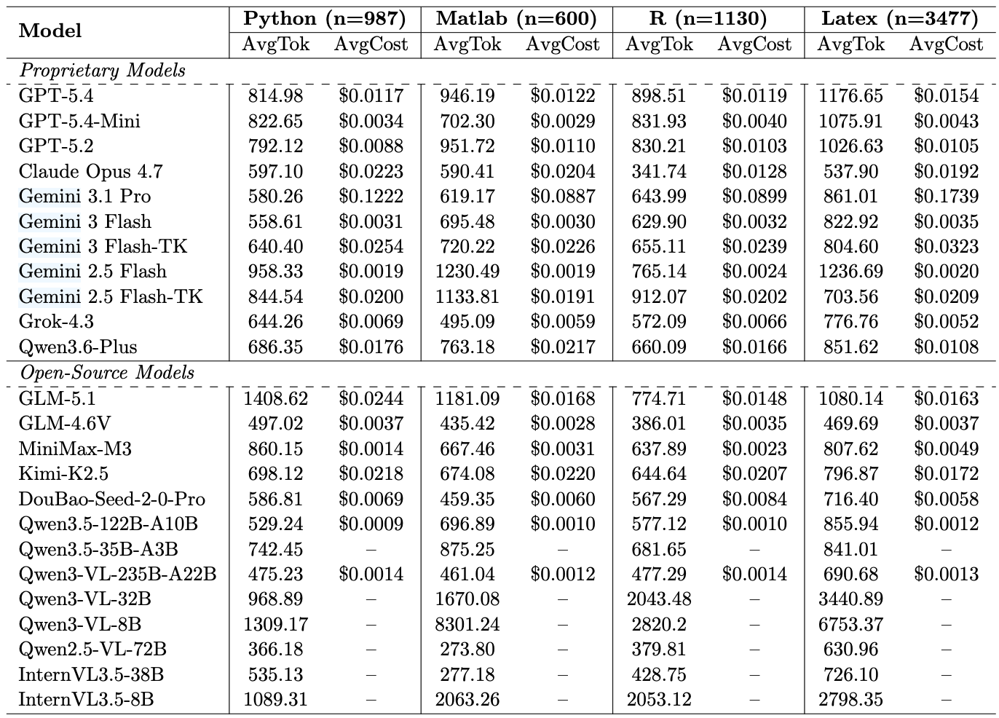
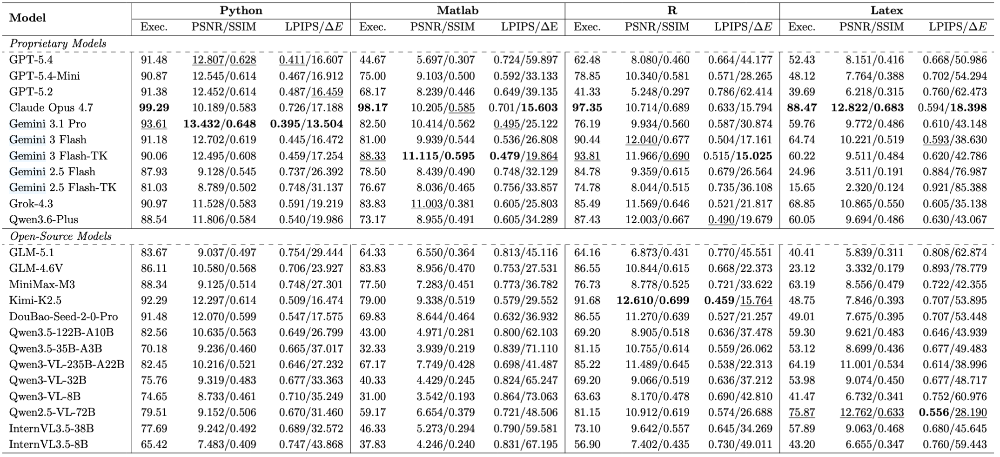
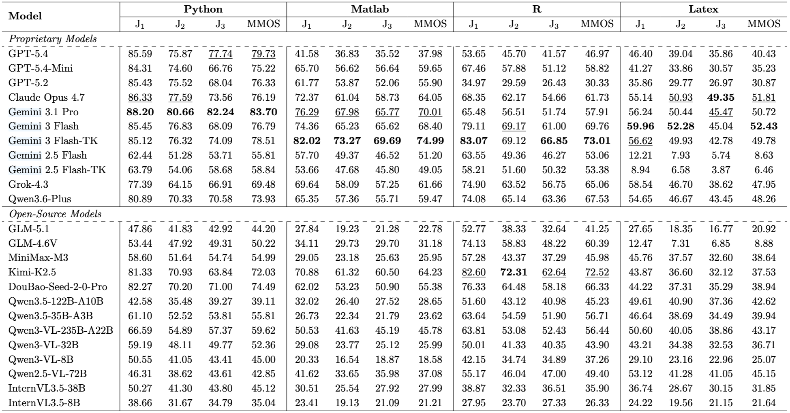
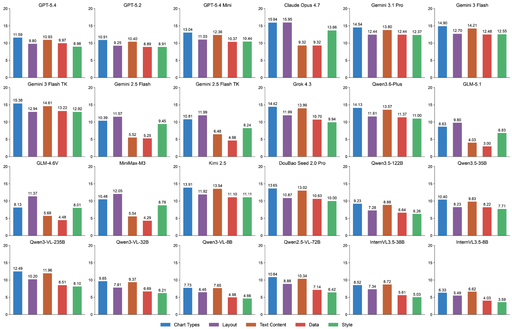
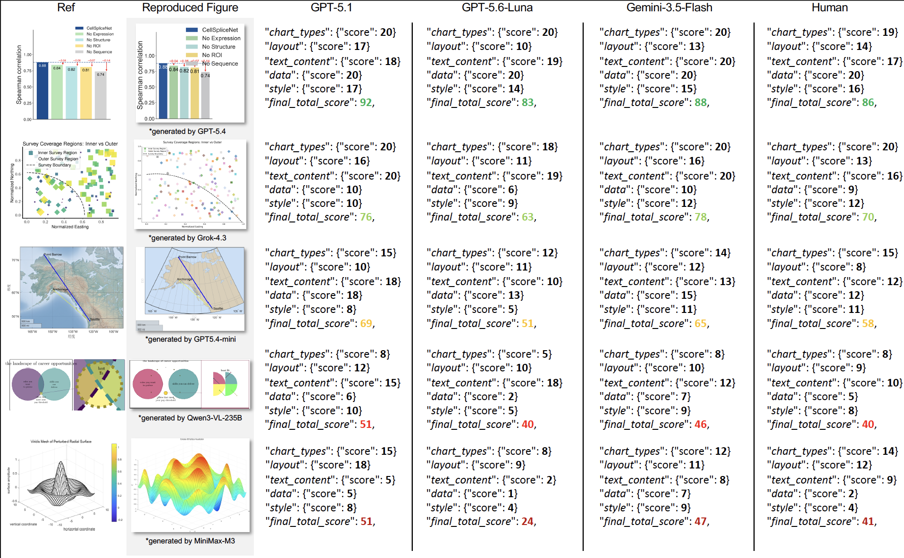
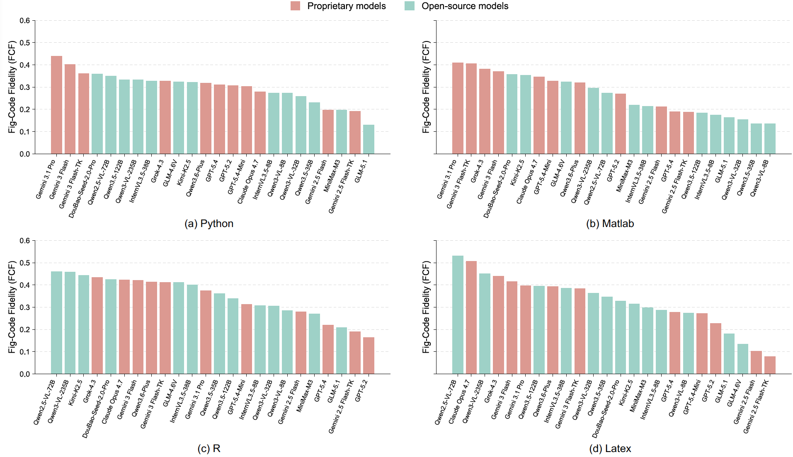

Image-code pairs
A comprehensive collection covering four languages: Python, MATLAB, R, and LaTeX.
A benchmark for figure-to-code generation
1 Shanghai Jiao Tong University2 Shanghai AI Laboratory3 Macao Polytechnic University
* Corresponding author
Evaluating MLLMs on figure reproduction,
integrating multimodal comprehension and generation.

Perception meets generation
Multimodal Large Language Models (MLLMs) have demonstrated impressive capabilities in both visual understanding and code generation. However, existing benchmarks typically evaluate these two modalities in isolation, lacking a dedicated assessment of their unification, i.e., how a model can perceive complex visual structures and synthesize them into precise, executable code. Moreover, current visual code generation benchmarks often rely on simplified layouts within single programming environments, falling short of evaluating true unified multimodal reasoning. To bridge this gap, we propose FigCodeBench, a comprehensive framework for rigorously evaluating MLLMs on figure reproduction, integrating multimodal comprehension and generation. We first design a systematic dataset construction pipeline, resulting in a total of 6,194 instances that cover 7 functional categories and 4 types of programming languages (Python, Matlab, R, and Latex). We further categorize figure reproduction into three tiers (Easy, Medium, Hard) with visual and code complexity modeling, specifically targeting complex structural reasoning, varying aspect ratios, and dense geometric constraints. We introduce a multi-dimensional evaluation protocol, encompassing visual fidelity (e.g., PSNR, SSIM, LPIPS) and syntactic isomorphism (e.g., abstract syntax tree similarity), that aligns highly with the Mean Machine Opinion Score (MMOS) and human preferences. Based on our framework, we conducted extensive experiments on 24 widely used proprietary and open-source MLLMs (e.g., Gemini 3.1 Pro, GPT-5.4, and Kimi-K2.5), where we observed a universal, non-linear performance cliff across different programming languages and difficulty scenarios for all models, and gained several insights, such as the significant metric decline in rigid declarative languages. Our benchmark offers (1) a comprehensive dataset and multi-dimensional evaluation pipeline; (2) an up-to-date leaderboard on MLLM figure reproduction proficiency; and (3) a nuanced understanding of the perceiving and reasoning bottlenecks hindering unified comprehension and generation in current MLLMs.
Beyond describing an image
Researchers often have a scientific figure and need working code that reproduces it. For a model, this means turning visual structure into a rendered program, not merely describing the image or answering questions about it. We argue that text-only coding tests and image-understanding tests leave this perception-to-generation step unmeasured.
FigCodeBench assesses the ability to observe complex charts—such as line graphs, bar charts, scatter plots, and architecture diagrams—and generate corresponding reproducing code. This tests visual perception and fine-grained understanding, while challenging logical reasoning and alignment in code generation.
A comprehensive collection covering four languages: Python, MATLAB, R, and LaTeX.
Image-oriented and code-oriented metrics, Mean Machine Opinion Score, and Figure-Code Fidelity.
Experiments examine capability boundaries, adaptability across languages, and common error patterns.
The figure-code collection
6,194 image-code pairs across four programming languages.
Explore the collection on Hugging Face.

| Directory | Language | Source code extension |
|---|---|---|
python/ | Python | .py |
Matlab/ | MATLAB | .m |
R/ | R | .R |
latex/ | LaTeX | .tex |
Figure images are stored in PNG format. Auxiliary information is provided in text files whose names end with _auxinfo.txt.
Each language directory contains exemplary/ and user_generated/ subsets. Both follow the same six-directory structure:
<language>/
├── exemplary/
│ ├── code_base/
│ ├── code_variant1/
│ ├── code_variant2/
│ ├── image_base/
│ ├── image_variant1/
│ └── image_variant2/
└── user_generated/
├── code_base/
├── code_variant1/
├── code_variant2/
├── image_base/
├── image_variant1/
└── image_variant2/code_base/ contains source code and auxiliary information for the base collection; image_base/ contains its figure images.
code_variant1/ and code_variant2/ contain source code and auxiliary information for the first and second variants. Their figure images are in image_variant1/ and image_variant2/.
Variant collections contain modified figure-code examples. Their sizes may differ from the base collection: do not assume every base example has both variants.
The Python, MATLAB, and R collections organize files into six categories within each code and image directory:
The LaTeX collection (Conceptual) uses a flatter structure: source code, auxiliary information, and images are stored directly in their respective version directories, without the six category subdirectories.
Multi-dimensional evaluation
FigCodeBench combines image-oriented and code-oriented evaluation with machine opinion scoring and figure-code fidelity.
Evaluation of reproduced figure images.
View image-oriented resultsEvaluation of reproducing code.
View code-oriented resultsMMOS results, detailed score distributions, and qualitative examples.
View MMOS resultsThe Figure-Code Fidelity (FCF) metric.
View FCF resultsThe evaluated model landscape
24 mainstream MLLMs: 11 proprietary and 13 open-source models.

Figure reproduction proficiency
Performance, evaluation cost, and results across image categories.

Expand a result below. Select any research figure to view it at full size.







Reproducing the figures
Reference runtimes and rendering settings for the four language collections.
| Collection | Runtime / toolchain | Main libraries or settings |
|---|---|---|
| Python | Python | Primarily matplotlib and seaborn; the execution workflow automatically detects and installs missing packages. |
| MATLAB | MATLAB R2023a | Additional toolboxes may be required by individual scripts. |
| R | R 4.6.0 | The execution workflow automatically detects and installs missing R packages. |
| LaTeX | A TeX distribution providing XeLaTeX | xelatex is the reference rendering engine; 300 DPI for rasterized output. |
LaTeX examples require the packages and fonts they use. pdflatex may work for compatible examples, but is not the reference engine; XeLaTeX-specific font or Unicode features may not compile with it.
Consult the repository environment documentation for setup context and check the files available in your checkout before running a generation workflow.
Please contact the first author of this paper for queries.
Zijian Chen
zijian.chen@sjtu.edu.cn
Please feel free to cite our paper.
@misc{chen2026pixelcodingevaluatingfigure,
title={From Pixel to Coding: Evaluating the Figure Reproduction Capabilities of MLLMs},
author={Zijian Chen and Zhengyu Chen and Bohan Liang and Lirong Deng and Yushuo Zheng and Yanwei Jiang and Qi Jia and Kaiwei Zhang and Wenjun Zhang and Guangtao Zhai},
year={2026},
eprint={2610.10066},
archivePrefix={arXiv},
primaryClass={cs.CV},
url={https://arxiv.org/abs/2610.10066},
}